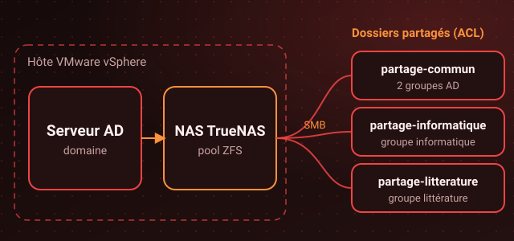
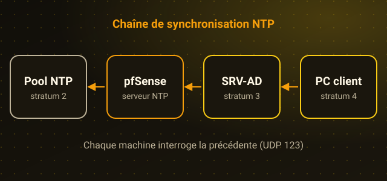

APSSI Group – Stagiaire technicien systèmes et réseaux
Missions :
- Configuration de switchs Cisco (CBS220) via l'interface web
- Diagnostic et résolution d'incidents chez les clients
Étudiant BTS SIO – option SISR
Je me forme à l'administration des systèmes et réseaux à ISITECH Lyon, en alternance.
Je suis en BTS SIO option SISR (Solutions d'Infrastructure, Systèmes et Réseaux) à ISITECH Lyon, en alternance.
Mon parcours n'est pas linéaire : animation 3D (Ynov Campus), puis développement web full-stack (3W Academy), et une expérience en logistique chez UPS. Ces étapes m'ont donné de la rigueur, de l'adaptabilité et une vraie curiosité pour comprendre comment les choses fonctionnent, avant de me spécialiser dans les systèmes et réseaux.
Les réalisations que j'ai menées pendant mon BTS SIO SISR. Clique sur un projet pour voir le détail.

VLAN, HSRP, EtherChannel (LACP) et router-on-a-stick sur du matériel physique, avec un pare-feu pfSense et un serveur Windows Server 2022.
Voir le projet →
Choix, installation et configuration d'un NAS TrueNAS joint au domaine, avec des droits d'accès par groupe sur trois dossiers partagés.
Voir le projet →
pfSense en serveur de temps, Active Directory et poste client synchronisés en cascade, avec analyse des échanges NTP sous Wireshark.
Voir le projet →Mes expériences en entreprise.
Missions :
La sécurité des jeux en ligne : anti-triche, attaques DDoS, protection des comptes, et rôle de l'IA.
Les jeux en ligne rassemblent des millions de joueurs, et donc des cibles pour les tricheurs, les attaquants réseau et les voleurs de comptes. Passionné de jeux vidéo, j'ai choisi d'étudier comment les éditeurs protègent leur infrastructure et leurs joueurs.
Problématique : comment les éditeurs de jeux en ligne sécurisent-ils leurs systèmes et leurs joueurs, et que change l'intelligence artificielle, côté défense comme côté attaque ?
Ce sujet rejoint mon option SISR : sécurité des postes et des serveurs, disponibilité des services face aux attaques, protection des données des utilisateurs.
J'évalue chaque source de ma veille (pertinence, date, fiabilité) et je la retiens ou l'écarte. Le tableau complet est consultable en ligne, avec le fichier Excel à télécharger.
Comment détecter un logiciel de triche, du simple scan des processus jusqu'au pilote qui s'exécute au niveau du noyau de Windows, et quels risques cela crée pour le poste du joueur.
Comment les serveurs de jeu résistent aux attaques par déni de service : filtrage, répartition de charge, protection réseau.
Fuites de données chez les éditeurs, vol de comptes, authentification multifacteur, conformité au RGPD.
L'IA qui détecte les tricheurs et les bots, et l'IA utilisée pour tricher ou attaquer.
Cloudflare observe une évolution vers de nombreuses attaques courtes plutôt que quelques attaques géantes : 18,2 millions d'attaques réseau bloquées sur le trimestre. Les attaques supérieures à 1 Tbps ont fortement baissé, un recul que le rapport relie à des actions contre de grands botnets d'objets connectés.
Ce que j'en retiens : la protection ne peut pas être manuelle, elle doit être automatique et permanente. Le jeu vidéo n'est pas cité dans ce rapport, mais les mêmes techniques visent les services en ligne, dont les serveurs de jeu.
Riot Games explique que Vanguard charge un pilote noyau au démarrage de Windows, pour empêcher un logiciel de triche de s'y glisser avant lui. Riot affirme avoir limité ses droits, fait relire le code par des chercheurs externes et ne pas collecter d'informations sur le système. Des joueurs s'inquiétaient qu'un pilote noyau ait des droits étendus.
Ce que j'en retiens : c'est un compromis entre efficacité de la protection et sécurité du poste utilisateur, qui rejoint la notion de moindre privilège.
Activision renforce son anti-triche Ricochet, qui s'exécute au niveau du noyau, avec de l'intelligence artificielle. Plus de 19 000 bannissements ont été annoncés dans le mode classé de Black Ops 6, une semaine après son lancement.
Ce que j'en retiens : l'IA accélère la détection et les sanctions, mais l'article ne détaille pas son fonctionnement. Un point à approfondir dans mes prochaines lectures.
Organisées selon les blocs du BTS SIO option SISR.
N'hésitez pas à me contacter pour échanger sur mon parcours, mes projets ou mes centres d'intérêt.